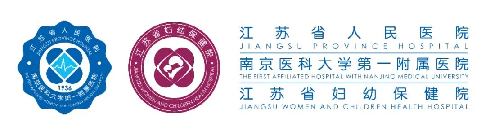
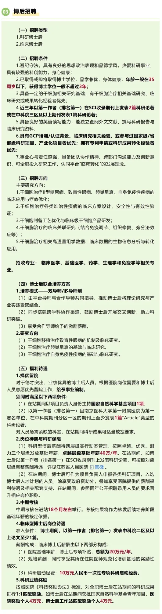

江苏省人民医院干细胞技术平台博后招聘
原文：https://mp.weixin.qq.com/s?__biz=MzAwMzIzOTk5OQ==&mid=2247540773&idx=2&sn=290200d2068864b67492f652cd6e642e&chksm=9b3c5975ac4bd0633d06014e4ec2881f10ed759b60f79b066e394a628d48e42eb752cca171b0#rd 合集：求职/求学/招聘
01
写在前面
我们长期发布招聘/求职板块(甚至我给自己都发了求职：Biomamba求职| 国奖+4篇一作SCI)，欢迎各位老师/老板欢迎联系~我们也在招贤纳士：Biomamba生信基地诚招运营。其它需要求职的小伙伴也欢迎把简历发给我们[Biomamba_zhushou]，大家一起找工作/学习。用人单位也可以联系我们免费刊登招聘信息~
02
平台信息
江苏省人民医院（南京医科大学第一附属医院）临床医学研究院—干细胞技术平台（以下简称平台），依托南京医科大学临床医学一级学科博士点、博士后科研流动站，以三甲医院顶级临床诊疗资源为坚实支撑。平台紧扣《“健康中国2030”规划纲要》中关于加强医药技术创新、推进干细胞与再生医学发展、加快医药科技成果临床转化的战略部署，结合国务院818号令落地实施的政策契机，聚焦干细胞基础研究、干细胞治疗临床转化及技术创新，是国内领先的高水平干细胞科研转化平台。平台拥有符合GMP标准的干细胞制备与质控实验室，配备流式细胞仪、单细胞测序仪、活细胞成像系统等先进设备。建成临床级与科研级双干细胞库，可存储脐带、脂肪、羊膜等来源干细胞及配套临床样本，实现干细胞分离、培养、扩增、鉴定全流程标准化、自动化、可溯源操作。

平台负责人近年来在Cell Stem Cell(2026)、Cell Discovery(2024)等国际权威期刊发表学术论文20余篇,现依托国家战略机遇与平台前瞻布局，面向国内外公开招聘博士后研究人员，诚邀具有医学、生物学、药学等相关背景的人才加入，共探科研前沿、共筑转化成果。
左右滑动查看更多

04
应聘途径
1.全年接受入站申请，申请者请将个人最新中英文简历、代表性科研成果（论文、专利、项目材料等）按照“姓名+应聘博士后”格式命名，投递至指定邮箱：jsph_stemcell@163.com；
2.平台承诺对所有应聘材料严格保密，将根据履历背景、研究成果、转化潜力等进行初筛评估；
3.初筛通过后，将通过email或电话通知面试时间、地点和相关事宜。